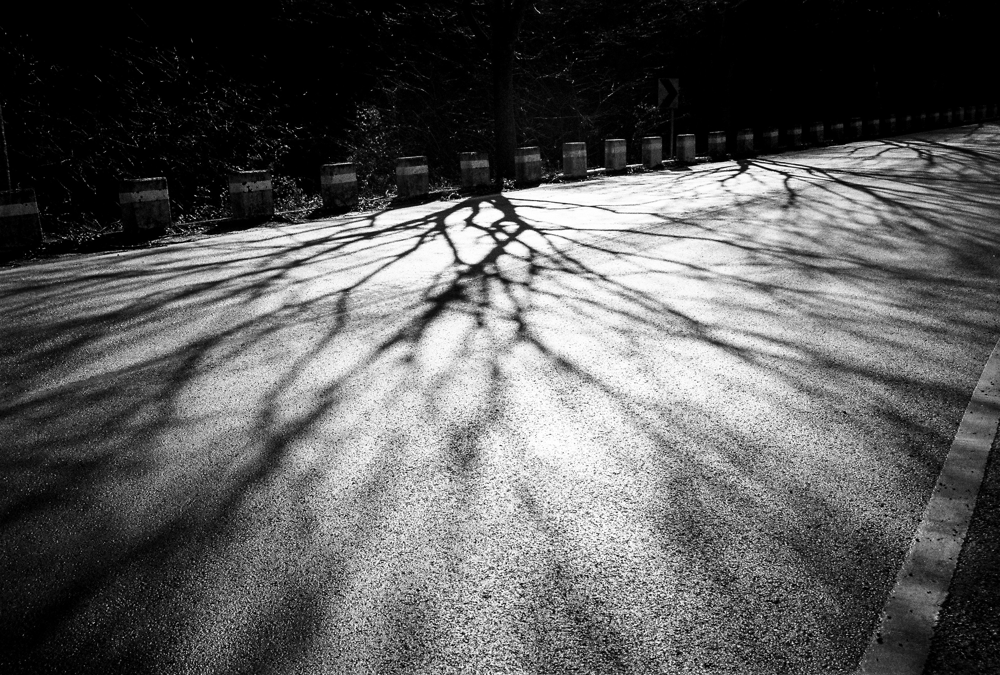
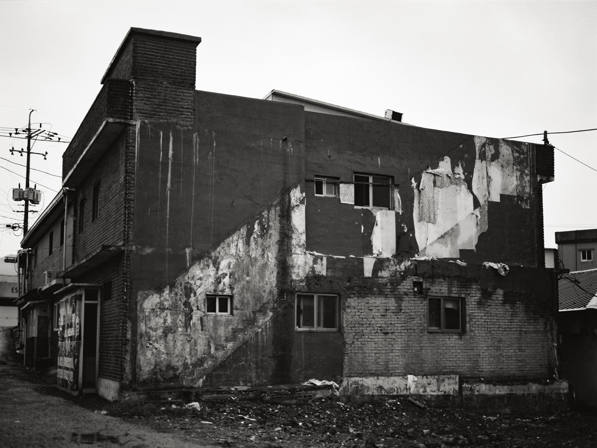

인터뷰: 홍지영
<
홍지영은 사진가입니다. 그녀는 사진이란 해당 장소로 이동해 그 땅에 발을 붙이고 자기 눈앞의 장면을 기록하는 일이라 말하는 데요. 이는 그동안 자신의 소속 집단인 ‘Without Frame!’을 통해 소수자들의 현장에서 생산되는 이야기들을 검열하지 않은 채 유통하고, 생산해온 태도와 다르지 않습니다. 홍대 인근에 위치한 모텔에서 단 12시간 동안 열린 전시 《모텔전》을 통해 전달된 트라우마에 관한 이야기는, 예술 현장에 전시에서 ‘이야기와 형식 사이의 관계’란 묵직한 질문을 던져주기도 했죠.
그로부터 2년 뒤인 지난 여름, 오후 10시부터 오전 2시까지 그녀의 개인전 《유적지를 도는 여자들》이 윈드밀에서 열렸습니다. 그녀는 ‘유적지’를 다음과 같이 말합니다. “모두가 여자인 공간, 시간과 소유라는 개념이 없는 공간, 그곳의 기운, 분위기, 느낌으로만 알 수 있는 공간.” 두 개의 사진 연작 <유적지>와 <타고난 희생자> 그리고 세 편의 글 「사건」, 「유적지」, 「유적지를 도는 여자들」로 이루어진 본전시에 대해 재훈은 홍지영에게 10가지 질문을 던집니다.

ⓒ 홍지영
Q1. 재훈: 제가 인터뷰를 제안했던 최초의 동기는 <유적지를 도는 여자들> 연작에 관한 호기심이었어요. 저는 2022년에 작가님이 발간하신 책 『물의 시간들』 이후 『Without Frame! Vol.3: 모텔전, 눈 뜨고 꾸는 꿈』에서부터 공개된 <유적지를 도는 여자들> 연작을 쭉 팔로우해 왔지만 한 번도 이해해 본 적이 없었습니다. 그래서 언젠가 한 번은 이 연작을 들여다봐야겠다 생각을 했고 이번 계기로 자세히 볼 수 있겠다는 생각이 들어 인터뷰를 제안드렸어요.
그럼, 《유적지를 도는 여자들》 속 사진적 장소에 관한 미약한 유형화로 질문을 열어보겠습니다. 본 전시에 출품된 두 가지 연작 <유적지>와 <타고난 희생자들>에 포함된 사진들을 저는 다음과 같이 분류해 보았어요. 일상과 비일상의 인물과 사물 그리고 풍경, 그것들은 폭발하거나 스며드는 빛과 함께, 중앙으로 소실점이 모이는 구도를 통해 비일상적 긴장감을 일으키는데요. <유적지> 중 9번 사진, <타고난 희생자들> 중 14번, 24번, 29번, 45번 등의 배경 사진이 특히 그렇습니다. 이 사진들에 대해 같이 한번 생각해 보아요.

ⓒ 홍지영
이 사진들은 ‘사건’을 머금은 장소로 제게 읽히는데요. (「유적지」의 표현을 빌리자면 ‘이곳이 이곳이라는 점을 알게 해주는 가장 큰 증표인 이곳의 기운, 느낌, 분위기’를 구현한 곳.) 이 사진들을 촬영하셨을 당시 어떤 기분이었고 프린트된 사진으로 되돌아보았을 때 이곳은 어떤 장소가 되어 있었는지 여쭙습니다.
홍지영: 제가 촬영할 때 가장 좋아하는 느낌은 ‘이곳을 찍으면 안 되겠다’는 느낌이 들 때입니다. 재훈님께서 골라주신 사진들 역시 그런 두려움을 느끼며 찍은 사진들이에요. 이번 전시 중앙에 걸린 <타고난 희생자들> 사진들은 특히 그런 찍고 도망가는 감각에 집중해 사진을 구성했습니다. 다른 시리즈들과는 좀 다르죠.
재훈: <유적지>를 비교군으로 설정하면 더 정확한 이야기를 나눌 수 있을 듯해요. <유적지>의 첫 번째 사진 있죠.

ⓒ 홍지영
그 건물 용주골에서 촬영한 사진이더라고요. 어느 초원에서 한 명의 여자가 서 있고 한 명은 누워있는 사진은 현장 사진을 봤을 때 분위기가 소풍처럼도 보였고요. 방금 말씀해 주신 찍고 도망가야겠다는 감각은 <타고난 희생자들>에는 완전 적용되지만 <유적지>에서는 그렇지 않아요. <유적지>는 오히려 작가님의 드로잉이 내뿜는 감각과 공명하거든요. 그래서 저는 이 연작이 일종의 이론이라고 생각했어요. 진격의 거인에서 유미르가 머무르는 최초의 사막처럼요. ‘이게 골격입니다.’ 라고 밝히는 것 같달까요?
홍지영: <타고난 희생자들>은 느낌과 분위기에 가깝다면 <유적지>는 좀 더 구조에 가깝죠.
재훈: 저도 그렇게 느껴요.
홍지영: ... 제가 ‘유적지’라는 장소를 생각할 때 떠오르는 느낌이 있어요. 시간도 없고, 소유라는 개념도 없는 어떤 땅. 그걸 이번 전시에서 표현하고 싶었어요. 인화된 사진들이 전시장 벽에 걸려 있는 걸 봤을 때 그런 장소가 되어 있다고 생각을 했어요.
모든 사진에는 기억들이 담기죠. 사진에 담긴 그 장소의 특정한 정보나 역사, 촬영했던 순간 찍은 사람만이 아는 사적인 기억 같은 것들이요. 그렇게 한 장 한 장 모두 다른 사진들이 한꺼번에 벽에 달라붙어 있었을 때는 장소의 개별성이 중요하게 느껴지진 않았어요. 사진 안에 있는 공간들과 사진 안 속에 살았던 사람들이 윈드밀이란 공간과 관람자로 온 사람들과 뒤엉켜서 모든 요소가 다 엉켜 붙어 있는 새로운 장소가 된 것 같다고 생각했어요. 드디어 내가 발 디딜 수 있는 땅이 생긴 느낌이 들었습니다.
인터뷰: 홍지영
재훈, 홍지영
2026.01.10